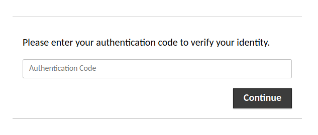
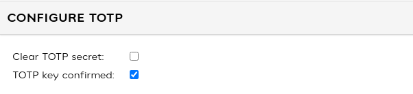

TOTP two-factor authentication¶
Guacamole supports TOTP as a second authentication factor, layered on top of any other authentication extension, including those available from the main project website, providing base requirements for key storage and enrollment are met. The TOTP authentication extension allows users to be additionally verified against a user-specific and secret key generated during enrollment of their authentication device.
Important
This chapter involves modifying the contents of GUACAMOLE_HOME - the
Guacamole configuration directory. If you are unsure where GUACAMOLE_HOME is
located on your system, please consult Configuring Guacamole before
proceeding.
Prerequisites¶
The enrollment process used by Guacamole’s TOTP support needs to be able to store an automatically-generated key within the user’s account. Another extension must be installed which supports storage of arbitrary data from other extensions. Currently the only extensions provided with Guacamole which support this kind of storage are the database authentication extensions.
It is thus recommended that authentication against a database be fully configured prior to setting up TOTP. Instructions walking through the setup of database authentication for Guacamole are provided in Database authentication.
How TOTP works with Guacamole¶
Guacamole provides support for TOTP as a second authentication factor. To make use of the TOTP authentication extension, some other authentication mechanism will need be configured, as well. When a user attempts to log into Guacamole, other installed authentication methods will be queried first:

Only after authentication has succeeded with one of those methods will Guacamole prompt the user to further verify their identity with an authentication code:

If both the initial authentication attempt and verification using TOTP succeed, the user will be allowed in. If either mechanism fails, access to Guacamole is denied.
Enrollment¶
If the user does not yet have a TOTP key associated with their account (they have not yet completed enrollment), they will be required to enroll an authentication device after passing the first authentication factor. A QR code containing an automatically-generated key will be presented to the user to be scanned by their authentication app or device:

If the authentication device does not support scanning QR codes for enrollment, the details within the QR code can be revealed by clicking the “Show” link next to the “Details” header. These values can then be entered manually:

Enrollment is completed once the user enters a valid authentication code generated by their device using the provided key.
Reseting TOTP Data¶
It may become necessary for certain users to clear their TOTP key and/or force them to re-confirm enrollment, such as in situations where a user loses their phone and needs to reconfigure TOTP. The user’s existing TOTP key can be cleared by checking the “Clear TOTP secret” box in the user interface and then saving the user configuration. The next time that the user logs in, they will be given a new key (QR code) and forced to re-enroll.
If you simply want a user to be able to re-configure an existing key, without resetting the secret, you can un-check the box marked “TOTP key confirmed” and save the user configuration, and the user will be presented with the QR code at next login and asked to confirm it.

Downloading the TOTP extension¶
The TOTP authentication extension is available separately from the main
guacamole.war. The link for this and all other officially-supported and
compatible extensions for a particular version of Guacamole are provided on the
release notes for that version. You can find the release notes for current
versions of Guacamole here: http://guacamole.apache.org/releases/.
The TOTP authentication extension is packaged as a .tar.gz file containing
only the extension itself, guacamole-auth-totp-1.4.0.jar, which must
ultimately be placed in GUACAMOLE_HOME/extensions.
Installing TOTP authentication¶
Guacamole extensions are self-contained .jar files which are located within
the GUACAMOLE_HOME/extensions directory. To install the TOTP authentication
extension, you must:
Create the
GUACAMOLE_HOME/extensionsdirectory, if it does not already exist.Copy
guacamole-auth-totp-1.4.0.jarwithinGUACAMOLE_HOME/extensions.Configure Guacamole to use TOTP authentication, as described below.
Important
You will need to restart Guacamole by restarting your servlet container in order to complete the installation. Doing this will disconnect all active users, so be sure that it is safe to do so prior to attempting installation. If you do not configure the TOTP authentication properly, Guacamole will not start up again until the configuration is fixed.
Configuring Guacamole for TOTP¶
With the exception of the storage and permission requirements described above, the TOTP extension should work out-of-the-box without any additional configuration. Defaults have been chosen for all configuration parameters such that the TOTP extension will be compatible with Google Authenticator and similar, popular TOTP implementations.
If your intended authentication application or device has different
requirements, or you wish to override the defaults, additional properties may
be specified within guacamole.properties:
totp-issuerThe human-readable name of the entity issuing user accounts. If not specified, “Apache Guacamole” will be used by default.
totp-digitsThe number of digits which should be included in each generated TOTP code. Legal values are 6, 7, or 8. By default, 6-digit codes are generated.
totp-periodThe duration that each generated code should remain valid, in seconds. By default, each code remains valid for 30 seconds.
totp-modeThe hash algorithm that should be used to generate TOTP codes. Legal values are “sha1”, “sha256”, and “sha512”. By default, “sha1” is used.
Completing the installation¶
Guacamole will only reread guacamole.properties and load newly-installed
extensions during startup, so your servlet container will need to be restarted
before TOTP authentication will take effect. Restart your servlet container
and give the new authentication a try.
Important
You only need to restart your servlet container. You do not need to restart guacd.
guacd is completely independent of the web application and does not deal with
guacamole.properties or the authentication system in any way. Since you are
already restarting the servlet container, restarting guacd as well technically
won’t hurt anything, but doing so is completely pointless.
If Guacamole does not come back online after restarting your servlet container, check the logs. Problems in the configuration of the TOTP extension may prevent Guacamole from starting up, and any such errors will be recorded in the logs of your servlet container.